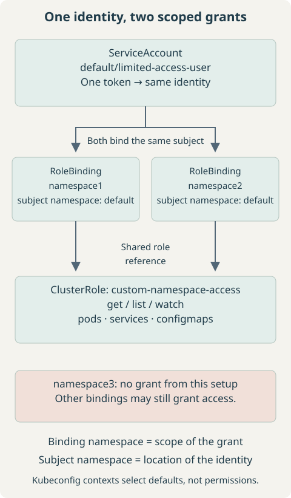

1. Problem and Access Contract
Build a separate kubeconfig that reads Pods, Services, and ConfigMaps in namespace1 and namespace2, using one ServiceAccount identity and one token shared by two contexts. It should fail when reading those resources in namespace3 or other unapproved namespaces.
This example grants no writes, Secret access, Pod logs, exec, node access, or cluster-wide namespace listing. Existing cluster policies can grant more: Kubernetes RBAC is additive, so this is not a deny policy. Verify the final credential before handing it over. Standard discovery and self-access-check endpoints may remain accessible; “namespace-limited” does not mean the identity can make no other API requests.
Use an administrator workstation with a compatible kubectl and Python 3. The operator needs permission to create the ServiceAccount and RBAC objects, grant the role’s permissions, and request ServiceAccount tokens. Optional Secret creation and impersonation checks need their own permissions. Confirm the intended cluster first:
kubectl config current-context
kubectl get namespace namespace1 namespace2Both namespaces must exist. In a disposable example cluster only, create missing namespaces before applying bindings:
kubectl create namespace namespace1
kubectl create namespace namespace22. Desired Architecture: One Identity
Create only default/limited-access-user. A RoleBinding in another namespace can reference that exact ServiceAccount. Creating identically named accounts in each target namespace creates different identities; it does not produce one shared identity.


The authenticated username is system:serviceaccount:default:limited-access-user. Its home namespace does not automatically grant it access to resources in default. A single token represents this identity across both allowed namespaces.
3. ClusterRole Definition Versus Binding Scope
| Combination | Effect for this role |
|---|---|
| ClusterRole alone | Defines reusable rules; grants nothing by itself. |
| ClusterRole + RoleBinding in namespace1 | Grants these namespaced resource permissions in namespace1. |
| Same ClusterRole + RoleBinding in namespace2 | Adds the same grant in namespace2. |
| ClusterRole + ClusterRoleBinding | Would grant these rules across all namespaces; unsuitable here. |
A RoleBinding does not turn cluster-scoped resources such as Nodes or Namespaces into namespaced resources. This role intentionally contains only namespaced resource rules. Other grants to the account or its groups are combined with these permissions; there is no overriding RBAC deny. See the RBAC reference.
4. Create the ServiceAccount
Save as serviceaccount.yaml:
apiVersion: v1
kind: ServiceAccount
metadata:
name: limited-access-user
namespace: default
automountServiceAccountToken: falsekubectl apply -f serviceaccount.yaml
kubectl get serviceaccount limited-access-user -n defaultExpect the account to exist in default. Disabling automount avoids default credential injection into Pods using this account; it does not prevent explicit TokenRequest issuance. This account is intended for the external kubeconfig, not to be reused by unrelated workloads.
5. Create the Reusable ClusterRole
Save as clusterrole.yaml:
apiVersion: rbac.authorization.k8s.io/v1
kind: ClusterRole
metadata:
name: custom-namespace-access
rules:
- apiGroups: [""]
resources: ["pods", "services", "configmaps"]
verbs: ["get", "list", "watch"]kubectl apply -f clusterrole.yamlThe empty API group means core resources. get reads one object, list reads a collection, and watch follows changes. Subresources such as pods/log and pods/exec need separate rules. ConfigMaps and Pod specifications can still contain sensitive application configuration; remove any resource category that is not needed.
6. Bind the Role in Each Allowed Namespace
Save both documents as rolebindings.yaml:
apiVersion: rbac.authorization.k8s.io/v1
kind: RoleBinding
metadata:
name: limited-access-user-read
namespace: namespace1
subjects:
- kind: ServiceAccount
name: limited-access-user
namespace: default
roleRef:
apiGroup: rbac.authorization.k8s.io
kind: ClusterRole
name: custom-namespace-access
---
apiVersion: rbac.authorization.k8s.io/v1
kind: RoleBinding
metadata:
name: limited-access-user-read
namespace: namespace2
subjects:
- kind: ServiceAccount
name: limited-access-user
namespace: default
roleRef:
apiGroup: rbac.authorization.k8s.io
kind: ClusterRole
name: custom-namespace-accesskubectl apply -f rolebindings.yaml
kubectl get rolebinding limited-access-user-read -n namespace1 -o yaml
kubectl get rolebinding limited-access-user-read -n namespace2 -o yamlIn each document, metadata.namespace is the namespace receiving access. subjects[].namespace: default identifies where the ServiceAccount exists; do not change it to namespace1 or namespace2. Both roleRef values point to the same reusable ClusterRole. Do not create a ClusterRoleBinding for this setup.
7. Generate the ServiceAccount Token
On Kubernetes 1.24+, creating a ServiceAccount normally does not automatically create a permanent token Secret. This old lookup can return an empty result:
kubectl get sa limited-access-user -n default \
-o jsonpath='{.secrets[0].name}'Modern Pod credentials use projected, expiring tokens obtained through TokenRequest, associated with the BoundServiceAccountTokenVolume approach. A manually created legacy token Secret is a separate mechanism. Do not populate the ServiceAccount’s secrets list merely to make the old lookup work. See ServiceAccount token administration.
Option 1: short-lived TokenRequest token — preferred
These illustrative commands print a bearer credential. Use a private terminal without command tracing or session capture. The generator in the next section captures the token internally instead; you do not need to run both routes.
kubectl create token limited-access-user -n default
# Alternative: request a particular lifetime
kubectl create token limited-access-user -n default --duration=24hThe API server chooses the actual expiration, which may differ from the requested duration. Without a custom audience, kubectl requests a token for the Kubernetes API server. A token embedded in a file does not auto-refresh: generate and securely distribute a replacement before expiration. Minting another token does not immediately revoke the old one. See kubectl create token.
Option 2: explicitly managed long-lived Secret
Only when a persistent credential is intentionally required, save this as serviceaccount-token.yaml. The Secret and ServiceAccount must share a namespace:
apiVersion: v1
kind: Secret
metadata:
name: limited-access-user-token
namespace: default
annotations:
kubernetes.io/service-account.name: limited-access-user
type: kubernetes.io/service-account-tokenkubectl apply -f serviceaccount-token.yaml
kubectl get secret limited-access-user-token -n defaultThe token controller fills its data asynchronously. An empty token immediately after creation can mean it is not populated yet. This extraction prints the credential, so use it only in a private terminal; on Linux, GNU base64 accepts --decode:
kubectl get secret limited-access-user-token -n default \
-o jsonpath='{.data.token}' | base64 --decodePossession grants the identity’s effective permissions until this credential is revoked or otherwise invalidated. A manually created Secret token generally has no built-in expiration. Prefer the short-lived route where practical; the generator supports this Secret only as an explicit alternative.
8. Generate the Limited Kubeconfig
Inspect the selected administrator context locally. Standard credential fields are redacted by default, but plugin arguments, environment values, or proxy URLs can still be sensitive; review before sharing the output:
kubectl config view --minifyFor reference, these assignments retrieve cluster metadata. --flatten embeds CA material when the source config references a CA file; --raw is needed for the unredacted CA data. Do not dump an entire raw administrator kubeconfig into a terminal or shared log.
CLUSTER_NAME=$(kubectl config view --minify -o jsonpath='{.clusters[0].name}')
SERVER_URL=$(kubectl config view --minify -o jsonpath='{.clusters[0].cluster.server}')
CA_DATA=$(kubectl config view --raw --minify --flatten \
-o jsonpath='{.clusters[0].cluster.certificate-authority-data}')The output structure is one cluster, one user/token, and two contexts. The following is a conceptual template, not a usable credential:
apiVersion: v1
kind: Config
clusters:
- name: my-cluster
cluster:
server: https://kubernetes.example.com:6443
certificate-authority-data: <CA_DATA>
users:
- name: limited-access-user
user:
token: <TOKEN>
contexts:
- name: namespace1
context:
cluster: my-cluster
user: limited-access-user
namespace: namespace1
- name: namespace2
context:
cluster: my-cluster
user: limited-access-user
namespace: namespace2
current-context: namespace1Save the following complete generator as generate-limited-kubeconfig.sh. Run it in a private directory outside a Git checkout, using your administrator kubeconfig. It requests one short-lived token by default, writes a new file with mode 0600, and refuses to overwrite an existing path. JSON is also a valid kubeconfig representation; kubectl reads it normally.
#!/usr/bin/env bash
set -euo pipefail
set +x
umask 077
python3 <<'PYTHON'
import base64
import json
import os
import subprocess
from pathlib import Path
os.umask(0o077)
output = Path(os.environ.get("OUTPUT", "limited-access.kubeconfig"))
if output.exists() or output.is_symlink():
raise SystemExit("Output exists; choose a new OUTPUT path.")
mode = os.environ.get("TOKEN_MODE", "short")
if mode not in {"short", "secret"}:
raise SystemExit("TOKEN_MODE must be short or secret.")
def run(*args):
return subprocess.check_output(["kubectl", *args], text=True).strip()
admin_context = run("config", "current-context")
def admin(*args):
return run("--context", admin_context, *args)
def field(path):
return admin("config", "view", "--raw", "--minify", "--flatten",
"-o", "jsonpath={" + path + "}")
cluster_name = field(".clusters[0].name")
server = field(".clusters[0].cluster.server")
ca_data = field(".clusters[0].cluster.certificate-authority-data")
skip_tls = field(".clusters[0].cluster.insecure-skip-tls-verify")
if not cluster_name or not server.startswith("https://"):
raise SystemExit("A named cluster with an HTTPS endpoint is required.")
if skip_tls == "true" or not ca_data:
raise SystemExit("Provide a trusted CA; insecure TLS configs are refused.")
cluster = {"server": server, "certificate-authority-data": ca_data}
for key in ("tls-server-name", "proxy-url"):
value = field(".clusters[0].cluster." + key)
if value:
cluster[key] = value
if mode == "short":
token = admin("create", "token", "limited-access-user", "-n", "default",
"--duration=" + os.environ.get("TOKEN_DURATION", "1h"))
else:
encoded = admin("get", "secret", "limited-access-user-token", "-n", "default",
"-o", "jsonpath={.data.token}")
if not encoded:
raise SystemExit("Secret token is not populated; inspect it and retry.")
token = base64.b64decode(encoded, validate=True).decode("utf-8").strip()
if not token:
raise SystemExit("No token returned; no kubeconfig written.")
config = {
"apiVersion": "v1", "kind": "Config",
"clusters": [{"name": cluster_name, "cluster": cluster}],
"users": [{"name": "limited-access-user", "user": {"token": token}}],
"contexts": [
{"name": ns, "context": {"cluster": cluster_name,
"user": "limited-access-user", "namespace": ns}}
for ns in ("namespace1", "namespace2")
],
"current-context": "namespace1",
}
with output.open("x", encoding="utf-8") as handle:
json.dump(config, handle, indent=2)
handle.write("\n")
print("Created limited kubeconfig; verify access before sharing.")
PYTHONbash generate-limited-kubeconfig.shAlternatively, after creating and populating the explicit Secret above, choose the persistent-token mode. Run only one mode for the intended output file:
TOKEN_MODE=secret bash generate-limited-kubeconfig.shThe generator copies only cluster connection fields and the new ServiceAccount credential, not administrator users, client keys, or exec plugins. A copied proxy URL or TLS server name must also work for the recipient. It deliberately rejects missing CA data; clusters using system trust need an explicitly verified trust configuration before adapting it. Ensure the API endpoint is reachable from the receiving machine. Keep the full generated file private. The kubeconfig reference explains cluster, user, and context entries.
9. Switch Between Authorized Namespaces
kubectl --kubeconfig=limited-access.kubeconfig config get-contexts
kubectl --kubeconfig=limited-access.kubeconfig config use-context namespace1
kubectl --kubeconfig=limited-access.kubeconfig get pods
kubectl --kubeconfig=limited-access.kubeconfig config use-context namespace2
kubectl --kubeconfig=limited-access.kubeconfig get servicesBoth contexts use the same user entry and token. The namespace stored in a context is only a default. A caller can override it or edit the file, but that does not add permissions:
kubectl --kubeconfig=limited-access.kubeconfig get pods -n namespace3Expect Forbidden if the credential is valid and no other grant permits the operation. RBAC is the security boundary; removing a context or omitting a namespace from the file does not revoke access.
10. Verify Allowed and Denied Operations
As an administrator allowed to impersonate this account, perform these preliminary checks:
kubectl auth can-i get pods \
--as=system:serviceaccount:default:limited-access-user -n namespace1
kubectl auth can-i get pods \
--as=system:serviceaccount:default:limited-access-user -n namespace2
kubectl auth can-i get pods \
--as=system:serviceaccount:default:limited-access-user -n namespace3yes
yes
noAn impersonation authorization error is not evidence that the target account lacks access. Group handling matters when auditing grants to groups: ServiceAccounts belong to system:serviceaccounts, system:serviceaccounts:default, and authenticated identities normally receive system:authenticated. Explicit --as-group checks require permission to impersonate those groups too. The real token is the decisive test of its authentication and effective permissions.
kubectl --kubeconfig=limited-access.kubeconfig get pods -n namespace1
kubectl --kubeconfig=limited-access.kubeconfig get pods -n namespace2
kubectl --kubeconfig=limited-access.kubeconfig get pods -n namespace3
kubectl --kubeconfig=limited-access.kubeconfig auth can-i create pods -n namespace1
kubectl --kubeconfig=limited-access.kubeconfig auth can-i get secrets -n namespace1
kubectl --kubeconfig=limited-access.kubeconfig auth can-i list namespacesThe first two return Pod lists or “No resources found”; the third should be Forbidden. The last three should answer no. Listing Pods requires list, whereas the initial preflight used get; this role contains both. Also verify Services and ConfigMaps as needed. Run expected-denial commands individually: they can return nonzero and stop a shell using set -e.
A request for all namespaces is a different authorization scope. Kubernetes does not filter an all-namespace list to the two allowed namespaces:
kubectl --kubeconfig=limited-access.kubeconfig get pods -AFor broader assurance, test the actual token against other existing namespaces and inspect all grants, including wildcard and group grants. Three sample checks do not prove absence of access everywhere.
11. Troubleshooting
| Symptom | Check / correction |
|---|---|
| ServiceAccount exists, but no token Secret | Expected on 1.24+. Use TokenRequest or intentionally create the annotated token Secret. |
| Secret exists, token field empty | Allow controller reconciliation; inspect account name/namespace, Secret type and annotation, and token-controller health. |
| Unauthorized / expired credential | Reissue a token with an API-server audience and replace the private kubeconfig. Changing contexts cannot renew it. |
| Forbidden in an allowed namespace | Check the exact verb/resource, subject namespace, roleRef, and binding namespace. Pods/log and other subresources are not in this role. |
| ClusterRole exists, but no access | It defines rules only; check that a RoleBinding references it. |
| Cannot list namespaces or run get pods -A | Expected: the example grants neither operation. Use the two known namespace contexts. |
| TLS error or connection timeout | Check CA, certificate hostname, endpoint reachability, and proxy settings; do not disable certificate verification. |
| RoleBinding apply reports immutable roleRef | Recreate the reviewed binding if changing its roleRef is intentional; its subject can be edited without that change. |
For unexpected access, inspect bindings using administrator credentials:
kubectl get rolebindings -A
kubectl get clusterrolebindings
kubectl get rolebindings -A -o yaml
kubectl get clusterrolebindings -o yamlLook for the exact ServiceAccount subject, its full username as a User subject, and grants to its groups. Review referenced roles for wildcard resources/verbs. Restricting this new ClusterRole does not subtract permissions granted elsewhere. Also consider other configured authorizers if RBAC alone does not explain the result.
kubectl auth can-i --list \
--as=system:serviceaccount:default:limited-access-user -n '<namespace>'
kubectl --kubeconfig=limited-access.kubeconfig auth can-i --list -n namespace1Treat these rule summaries as diagnostic aids; they can be incomplete with some authorizers. Test specific operations with the actual token. A working binding must still reference the account’s home namespace:
subjects:
- kind: ServiceAccount
name: limited-access-user
namespace: default12. Credential Security and Revocation
Prefer short-lived tokens and least privilege. Treat the kubeconfig as a bearer credential: keep mode 0600, transfer it through an approved secret-sharing channel, and never commit it, paste it into tickets, or log its raw contents. Avoid wildcard verbs/resources. For production human access, prefer external authentication such as OIDC with individual identities and appropriate lifecycle controls.
To remove the grant for namespace2, an administrator deletes its binding. This revokes that binding’s permissions for every token of the account; review other bindings that could still allow access:
kubectl delete rolebinding limited-access-user-read -n namespace2Deleting the namespace2 context from a local kubeconfig does not change server-side authorization. A recipient could recreate it or pass -n namespace2. Re-test with the real credential after changing RBAC.
For the manually created persistent token, deleting its Secret invalidates that Secret-backed credential for Kubernetes API authentication:
kubectl delete secret limited-access-user-token -n defaultThis does not revoke independently issued TokenRequest tokens. Those expire, or can be invalidated through applicable bound-object/ServiceAccount lifecycle mechanisms. Deleting the ServiceAccount invalidates its associated credentials, but affects every consumer of that identity. Removing a file from your machine never invalidates copies someone else holds. Do not promise instant termination of already-established watch streams.
13. Complete Execution Sequence
Save the three RBAC manifests and generator shown above. With namespace1 and namespace2 present and the correct administrator context selected, the recommended short-lived route is:
kubectl apply -f serviceaccount.yaml
kubectl apply -f clusterrole.yaml
kubectl apply -f rolebindings.yaml
bash generate-limited-kubeconfig.sh
kubectl --kubeconfig=limited-access.kubeconfig config get-contexts
kubectl --kubeconfig=limited-access.kubeconfig get pods -n namespace1
kubectl --kubeconfig=limited-access.kubeconfig get pods -n namespace2Then perform the expected-denial tests in the verification section before sharing. No ClusterRoleBinding and no token Secret is required on this route. One execution requests one token; both contexts reference its single user entry.
To prepare a replacement without overwriting the current credential, select a new output filename. The requested duration is still subject to server policy:
OUTPUT=limited-access-next.kubeconfig TOKEN_DURATION=24h \
bash generate-limited-kubeconfig.shVerify and distribute the replacement securely. The previous short-lived token can remain valid until its expiration unless separately invalidated.
14. Quick Command Reference
Inspect identity and namespace grants — administrator
kubectl get sa limited-access-user -n default
kubectl get clusterrole custom-namespace-access -o yaml
kubectl get rolebinding limited-access-user-read -n namespace1 -o yaml
kubectl get rolebinding limited-access-user-read -n namespace2 -o yamlGenerate a token-backed kubeconfig without displaying the token
bash generate-limited-kubeconfig.shSwitch context and test scope — recipient
kubectl --kubeconfig=limited-access.kubeconfig config use-context namespace1
kubectl --kubeconfig=limited-access.kubeconfig get pods
kubectl --kubeconfig=limited-access.kubeconfig config use-context namespace2
kubectl --kubeconfig=limited-access.kubeconfig get pods
kubectl --kubeconfig=limited-access.kubeconfig auth can-i list pods -n namespace3Expected final answer: no. Contexts make namespace selection convenient; RoleBindings determine where the identity is authorized.